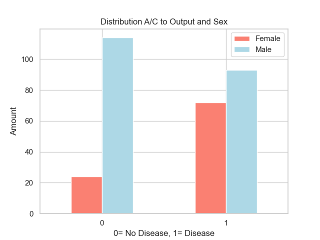
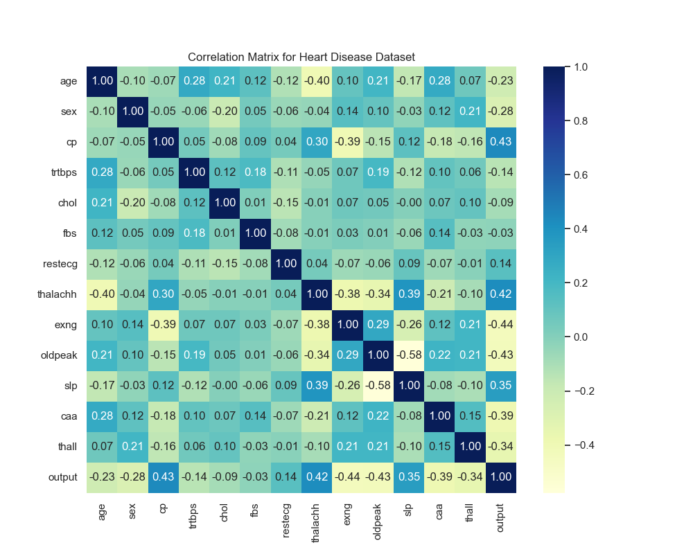
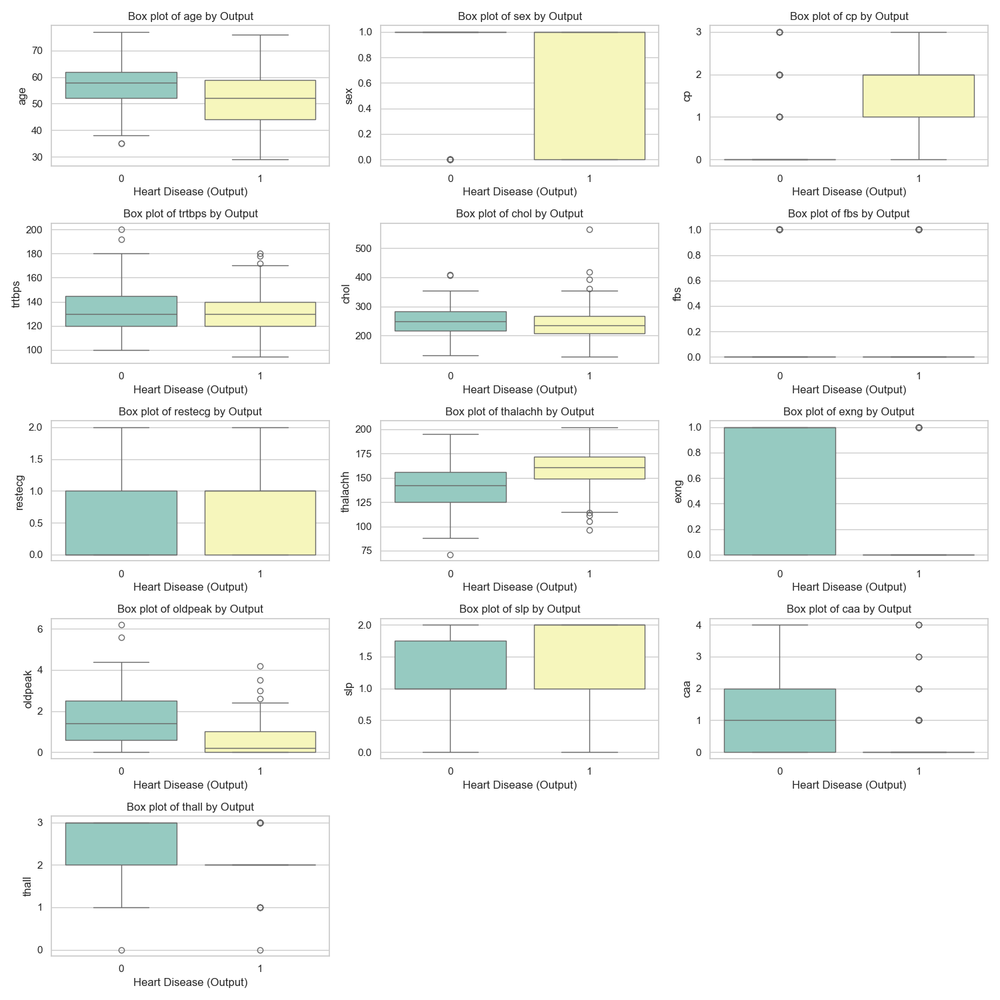
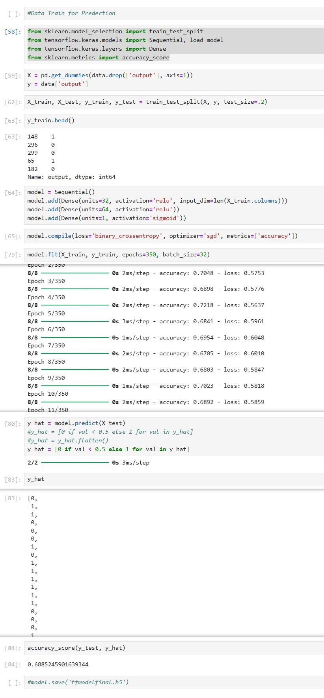

Data Analysis and Predictive Modeling using Python
Heart Disease Prediction
Introduction
-
Objective
To analyze key features and build a predictive model for heart disease using Python.
-
Target:
Predict the presence of heart disease
Dataset Overview
-
→ Total records
303 -
Features
14, including both categorical and continuous variables -
Target Variable
output (binary variable indicating heart disease presence)
Dataset Overview
-
→ age
Patient ageData Type: integer
-
→ sex
Gender (1 = male, 0 = female)Data Type: integer
-
→ cp
Chest pain type (categorical: values 0–3)Data Type: integer
-
→ rtbpst
Resting blood pressure (mm Hg)Data Type: integer
-
→ chol
Cholesterol level (mg/dl)Data Type: integer
-
→ fbs
Fasting blood sugar (>120 mg/dl) (1 = true; 0 = false)Data Type: integer
-
→ restecg
Resting electrocardiographic results (categorical: values 0–2)Data Type: integer
-
→ thalachh
Maximum heart rate achievedData Type: integer
-
→ exng
Exercise-induced angina (1 = yes; 0 = no)Data Type: integer
-
→ oldpeak
Depression induced by exercise relative to restData Type: float
-
→ slp
Slope of the peak exercise ST segmentData Type: integer
-
→ caa
Number of major vessels (0-4) colored by fluoroscopyData Type: integer
-
→ thall
Thalassemia (categorical: values 0–3)Data Type: integer
-
→ output
Target variable (1 = presence of heart disease, 0 = absence)Data Type: integer
Data Preprocessing
Data Tables
Data Preprocessing
Data Describe
Data Preprocessing
Data Training for Predication

Data Training for Predication
EDA
Age Distribution
Data Training for Predication
Data Training for Predication
Data Training for Predication
The model train with tensor flow.

Conclusion and Future Directions
Conclusion:
Future Work: